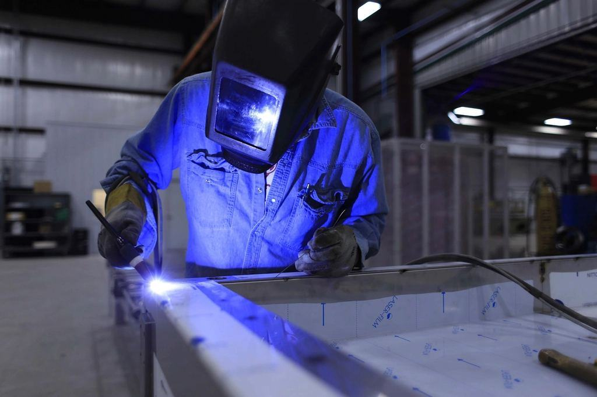

Om Brunflo Taksmide
Ove Strandberg var plåtslagare i Östersund och tröttnade på att beställa snörasskydd från södra Sverige som böjde sig redan första vintern i Storlien. 1997 började han svetsa egna fästen i ett garage i Brunflo, dimensionerade för den snö som faktiskt faller i fjällen.
Snörasskydd, takstegar och takbryggor som tillverkas för jämtländsk snölast och monteras av egna montörer med fallskydd.
Ove Strandberg var plåtslagare i Östersund och tröttnade på att beställa snörasskydd från södra Sverige som böjde sig redan första vintern i Storlien. 1997 började han svetsa egna fästen i ett garage i Brunflo, dimensionerade för den snö som faktiskt faller i fjällen.
I dag är vi 14 anställda och omsätter 19 miljoner kronor. Verkstaden på Tandsbyvägen kantpressar, stansar och svetsar alla produkter, och de levereras i samma kulör som taket – vi har 22 vanliga takfärger i lager.

Tjugonio vintrar med tak över huvudet
Ove Strandberg var plåtslagare i Östersund och tröttnade på att beställa snörasskydd från södra Sverige som böjde sig redan första vintern i Storlien. 1997 började han svetsa egna fästen i ett garage i Brunflo, dimensionerade för den snö som faktiskt faller i fjällen.
Senaste nytt

Villatak i dalgångarna monterar vi fram till att isen lägger sig – ring före november.

Hela stugbyn har nya skydd för snözon 5 inför säsongen.

Så prioriterade vi vilka fasader som skulle åtgärdas först.

Leveranstiden för fästen till falsade tak är nu tio arbetsdagar.
Skicka takets mått
Fyll i formuläret så hör vi av oss inom en arbetsdag.
- Telefon
- 070-174 06 08
- E-post
- tak@brunflotaksmide.se
- Öppettider
- Mån–fre 7–16 · montage även lördagar under barmarkssäsongen
Kontakta oss
- Kontor
- Tandsbyvägen 21
834 32 Brunflo - Telefon
- 070-174 06 08
- E-post
- tak@brunflotaksmide.se
- Öppettider
- Mån–fre 7–16 · montage även lördagar under barmarkssäsongen